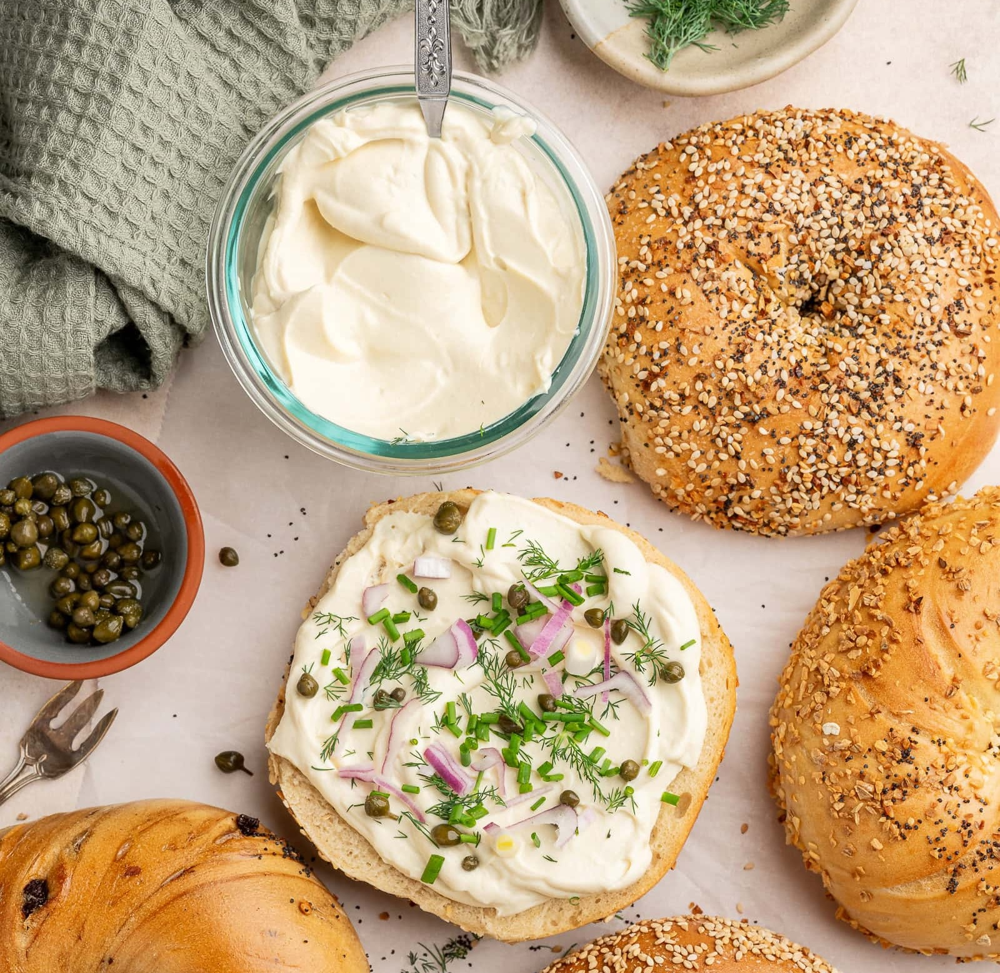

Tofu Cream Cheese

A thick and tangy homemade spread that's perfect for toast and bagels, in recipes or as a dip
This creamy vegan cream cheese is easy to make and requires only 7 simple ingredients. The base is delicious alone, but you can experiment and customize how you like!
Mix in scallions, shredded carrots, and fresh herbs for a savory vegan spread.
Alternatively, sweeten it up by incorporating raisins, cinnamon, and walnuts.
You will need:
- 14 oz block Firm Tofu
- 1 tbsp Apple Cider Vinegar
- 2 tbsp Lemon Juice
- 1 tbsp Nutritional Yeast
- 1 large Garlic Cloves
- 3 tbsp Vegan Butter melted
- 0.5-1 tsp Sea Salt
Instructions
- Drain the water from the package of tofu— don't press it.
- Add the firm tofu to a blender or food processor along with the remaining ingredients.
- Blend until smooth and creamy. A food processor may not blend as smooth as a blender; it might be a little grainy but it will still taste great.
- Pour into a container or bowl and chill in the fridge for 30 minutes to an hour before serving, if possible. The butter will harden and the texture will become smooth and creamy.
- Add any additional flavors and serve as desired! Enjoy!
Link to original recipe:
Liv Vegan Strong
Home